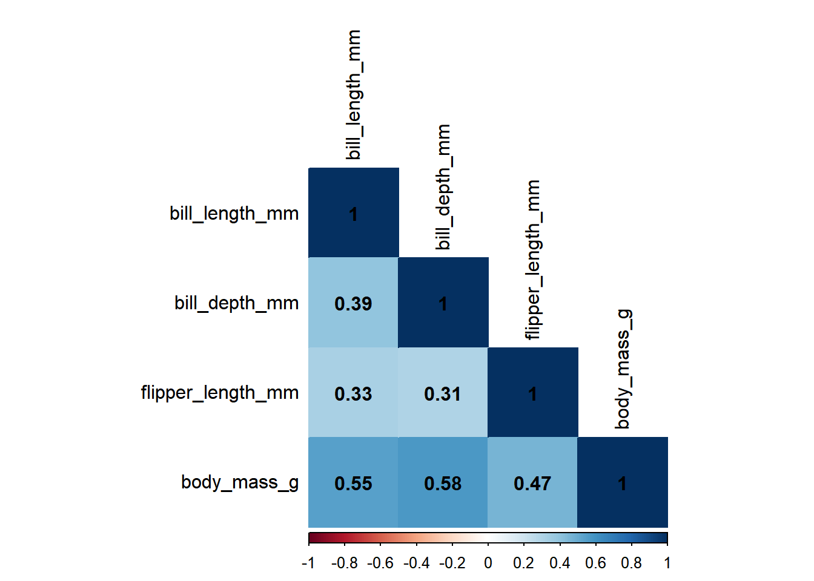
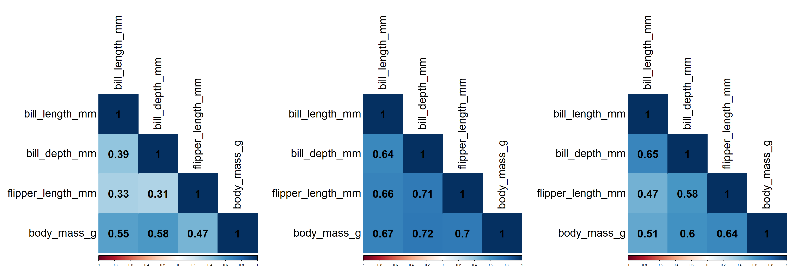
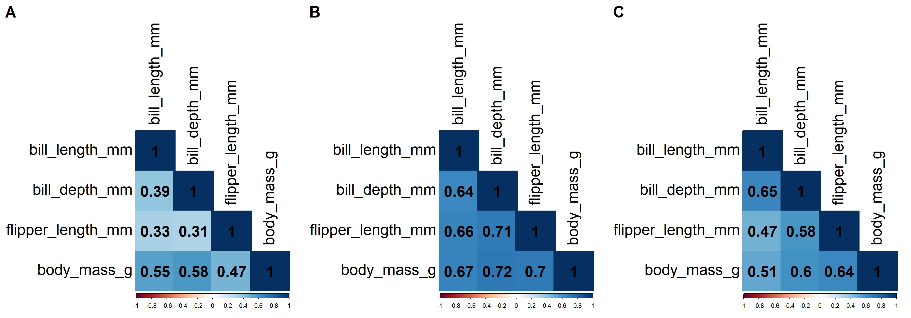

library(palmerpenguins)
library(dplyr)
library(corrplot)
library(ggplotify)
library(cowplot)
library(ragg)How to make a figure with several panels that include plots that are initially invisible? The case of the {corrplot} package
R
Data visualization
Correlation
Multi-panel figure using plots from {corrplot}
The problem
Some days ago, I was contacted by a student who wanted to visualize several sets of correlation values on the same figure. Making a multi-panel figure using correlation plots produced from the {corrplot} package seemed an interesting option. However, I met several unexpected problems to get the desired result. In this post, I share the solutions I have found to finally get a good result after some time spent on the web.
First, let’s load the packages required for our analyses:
Second, let’s get some data, here from the {palmerpenguins} package that provides physical characteristics of three species of penguins:
data("penguins")Third, let’s compute correlation matrices putting into relation the physical characteristics for each of the three species of penguins:
# Correlation matrix for 'Adelie' specie
mat_adelie <-
penguins %>%
filter(species == "Adelie") %>%
select(bill_length_mm: body_mass_g) %>%
cor(use = "pairwise.complete.obs")
# Correlation matrix for 'Gentoo' specie
mat_gentoo <-
penguins %>%
filter(species == "Gentoo") %>%
select(bill_length_mm: body_mass_g) %>%
cor(use = "pairwise.complete.obs")
# Correlation matrix for 'Chinstrap' specie
mat_chinstrap <-
penguins %>%
filter(species == "Chinstrap") %>%
select(bill_length_mm: body_mass_g) %>%
cor(use = "pairwise.complete.obs")Then, I thought I could simply assign the output of the corrplot() function from the {corrplot} package (i.e., the function that generates the correlation plot) to a name, say p, which could have allow me to use p when building the targeted multi-panel figure. Here the example for the correlation matrix related to the Adelie specie:
p <-
corrplot(
mat_adelie,
method ="color",
type ="lower",
tl.col ="black",
addCoef.col = "black",
mar = c(0,0,0,0)
)
Unfortunately, this did not work. p did not return a plot, but the list of the information that were used when generating the plot:
p$corr
bill_length_mm bill_depth_mm flipper_length_mm body_mass_g
bill_length_mm 1.0000000 0.3914917 0.3257847 0.5488658
bill_depth_mm 0.3914917 1.0000000 0.3076202 0.5761382
flipper_length_mm 0.3257847 0.3076202 1.0000000 0.4682017
body_mass_g 0.5488658 0.5761382 0.4682017 1.0000000
$corrPos
xName yName x y corr
1 bill_length_mm bill_length_mm 1 4 1.0000000
2 bill_length_mm bill_depth_mm 1 3 0.3914917
3 bill_length_mm flipper_length_mm 1 2 0.3257847
4 bill_length_mm body_mass_g 1 1 0.5488658
5 bill_depth_mm bill_depth_mm 2 3 1.0000000
6 bill_depth_mm flipper_length_mm 2 2 0.3076202
7 bill_depth_mm body_mass_g 2 1 0.5761382
8 flipper_length_mm flipper_length_mm 3 2 1.0000000
9 flipper_length_mm body_mass_g 3 1 0.4682017
10 body_mass_g body_mass_g 4 1 1.0000000
$arg
$arg$type
[1] "lower"The reason is that the plot is made “invisible” when it is provided by the corrplot() function, making it impossible to directly catch.
The solutions
At first glance, I could have decided to abandon the idea of using several graphic objects to be combined into a multi-panel figure, and then I could have stopped after the implementation of the following solution proposed on Stack Overflow:
par(mfrow = c(1, 3))
corrplot(
mat_adelie,
method = "color",
type = "lower",
tl.col = "black",
addCoef.col = "black",
mar = c(0,0,0,0),
tl.cex = 2.5,
number.cex = 2.5
)
corrplot(
mat_gentoo,
method = "color",
type = "lower",
tl.col = "black",
addCoef.col = "black",
mar = c(0,0,0,0),
tl.cex = 2.5,
number.cex = 2.5
)
corrplot(
mat_chinstrap,
method = "color",
type = "lower",
tl.col = "black",
addCoef.col = "black",
mar = c(0,0,0,0),
tl.cex = 2.5,
number.cex = 2.5
)
par(mfrow = c(1, 1)) # To clear layoutHowever, one could want to be able to catch the plot from the corrplot() function and to bind it to a name so that it can be used elsewhere in a more complex figure. What I have learnt is that it remains possible to do it by using a customized function that would return the last plot shown in the graphic device, as proposed on Stack Overflow:
get_corr_plot <- function(matrix) {
corrplot(
matrix,
method = "color",
type = "lower",
tl.col = "black",
addCoef.col = "black",
mar = c(0,0,0,0),
tl.cex = 2,
number.cex = 2
)
p <- recordPlot()
return(p)
}In the code above, you will notice that the last plot is recorded thanks to the recordPlot() function from the {grDevices} package. The new problem is now that the function returns an object of class recordedplot, which is not yet really interesting to make complex figures as one could want to do with the {cowplot} package for example because the class recordedplot may not be accepted by the package functions. A solution is then to convert the recordedplot object to a grob object using the function as.grob() from the {ggplotify} package, as follows:
grob_adelie <- as.grob(~get_corr_plot(matrix = mat_adelie))
grob_gentoo <- as.grob(~get_corr_plot(matrix = mat_gentoo))
grob_chinstrap <- as.grob(~get_corr_plot(matrix = mat_chinstrap))We can finally use the plot_grid() function from the {cowplot} package to draw our final figure:
fig <- plot_grid(grob_adelie, grob_gentoo, grob_chinstrap, nrow = 1, labels=LETTERS[1:3], label_size = 25)
fig
The final touch
The graphic device may not always provide an approriate view of the figure. To have more control on this when we want to export the figure, we can use the {ragg} package as follows (maybe several trials and errors when manipulating the width, height, and scaling arguments will be needed to get satisfactory results; for more information, please see the Thomas Lin Pedersen’s post):
agg_png(
"posts/corrplot-multiplots/index_files/figure-html/fig.png",
width = 21,
height = 7,
units = "cm",
res = 300,
scaling = 0.4
)
fig
dev.off()Et voilà, we are done!
Session info
R version 4.2.1 (2022-06-23 ucrt)
Platform: x86_64-w64-mingw32/x64 (64-bit)
Running under: Windows 10 x64 (build 19043)
Matrix products: default
locale:
[1] LC_COLLATE=French_France.utf8 LC_CTYPE=French_France.utf8
[3] LC_MONETARY=French_France.utf8 LC_NUMERIC=C
[5] LC_TIME=French_France.utf8
attached base packages:
[1] stats graphics grDevices utils datasets methods base
other attached packages:
[1] ragg_1.2.3 ggplotify_0.1.0 cowplot_1.1.1
[4] corrplot_0.92 dplyr_1.0.10 palmerpenguins_0.1.1
loaded via a namespace (and not attached):
[1] pillar_1.8.1 compiler_4.2.1 yulab.utils_0.0.5 tools_4.2.1
[5] digest_0.6.29 jsonlite_1.8.3 evaluate_0.18 lifecycle_1.0.3
[9] tibble_3.1.8 gtable_0.3.1 pkgconfig_2.0.3 rlang_1.0.6
[13] cli_3.4.1 DBI_1.1.3 rstudioapi_0.14 yaml_2.3.6
[17] xfun_0.34 fastmap_1.1.0 stringr_1.4.1 knitr_1.40
[21] systemfonts_1.0.4 gridGraphics_0.5-1 generics_0.1.3 vctrs_0.5.0
[25] htmlwidgets_1.5.4 grid_4.2.1 tidyselect_1.2.0 glue_1.6.2
[29] R6_2.5.1 textshaping_0.3.6 fansi_1.0.3 rmarkdown_2.17
[33] ggplot2_3.4.0 magrittr_2.0.3 scales_1.2.1 htmltools_0.5.3
[37] assertthat_0.2.1 colorspace_2.0-3 utf8_1.2.2 stringi_1.7.8
[41] munsell_0.5.0